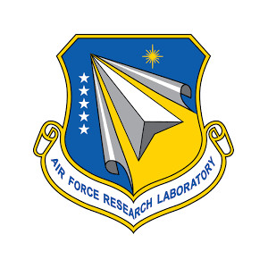

Experience
-

Summer - Fall '17
Technical Intern @ Sandia National Labs
My first real summer job was for the Electromagnetic Theory Group manager, at an Department of Energy Lab. I worked on various projects: developing internal websites and databases, programming simulations in Python and C++, coding data analysis in matlab, CADing and manufacturing experiments, and stress testing materials.
-
Spring '18
H.S. Diploma @ Albuquerque Academy
I studied a wide variety of subjects in high school, from logic and physics to philosophy and world history. I graduated with a GPA of 4.35/4.0. During this time, I was on the Speech and Debate Leadership Team and gained the title of Policy Debate Team Captain. Between competing in the Super Computing Challenge and acting as the Ultimate Frisbee Team Captain, I also enjoyed volunteering at the Southwest Women’s Law Center, ACLU, and Roadrunner Foodbank.
-

Summer '18
Research Scholar @ Air Force Research Lab
This research lab was a collaborative effort between the University of New Mexico and the Space Vehicle Directorate, coming together to work on Autonomous Production. I developed a control system for advanced manufacturing of satellites, focusing my research project on hybrid manufacturing implementation.
-
October '18 - Present
Undergraduate Researcher @ University of Michigan
During my first year of college, implementing advanced manufacturing for a UM Geology Department Lab was a good fit due to my interest in interdisciplinary research. I worked on making production quality equipment for a deep earth replication assembly that's used to study light elements and diamond in the earth. This involved the use of lab equipment, measurement devices, CNC, and 3D printers.
-
???
Be A Part of My Story
Who knows what's next? Reach out and let's make something happen!
Related Coursework
Computer Science Pragmatics | EECS 201 Spring '19
This interactive course covered some of the pratical elements of development starting with linux, git, and scripting, then moving through CI, build-systems, debuggers, and IDEs.
Algorithms and Data Structures I | EECS 280 Spring '19
The second course in the core CS curriculum, taught in C++, covered vectors, polymorphism, linked-lists, binary search trees, dynamic memory, recursion, error handling, and much more.
Applied Linear Algebra | MATH 214 Spring '19
Covering the basics of linear algebra for engineers in a project-based class, I worked on linear programming, error correcting codes, and machine learning.
Discrete Math | EECS 203 Spring '19
This course was an introduction to discrete math and the theory behind computer science, beginning with symbolic logic, induction, and sums, through Bayes, algorithms, and complexity.
Intro Engineering: Autonomous Vehicles | ENGR 100 Fall '18
An exploration of technical and communications elements, through programming of an autonomous drone and a PID control system.
Differential Equations | MATH 216 Fall '18
The lecture focused on solving differential equations analytically, while the lab used matlab to find solutions using numerical methods.